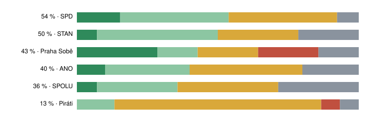

Note · 1 October 2026 · Prague city election programmes
What Prague's 2026 programmes can do in one term
Six programmes for the October 2026 Prague city election, read against one rule: what the City of Prague can do within four years under its own powers.
- promises read
- 80 six programmes · rows chosen by the author · descriptive count
- within the city's powers in one term
- 31 rated yes or likely · descriptive count
- only in part within one term
- 32 usually: preparation yes, completion no · descriptive count
- decided by the state or another body
- 13 laws, the state road and rail agencies, ministries, districts · descriptive count
Overwhelmed? Here's the short version
- Three programmes name housing numbers, 8 000 or 10 000 flats, that cannot be completed in four years, and word them as preparation, conditions or a long-term goal; those that promise starts, 2 000 or 1 000 a year, are closer to what a term allows, and SPD gives no number.
- No large transport project in any programme can be finished in one term; most programmes say they will prepare them.
- Almost every programme promises rules for Airbnb or a higher tourist fee, which the state decides.
- Most clearly in the city's own hands: its building regulations, parking and fares, the rules for allocating city flats and its budget rules.
- The ratings are the author's reading of 80 selected promises against the statutes cited; a new state law, or a project further along than its programme shows, would change them.
- This rates feasibility only, not whether the goals are good, and it is not a voting recommendation.
Photo: Petr Š · CC BY-SA 3.0, toned
.jpeg){kind=link}
How the programmes were read
The City of Prague is a municipality and a region in one1. It decides its own budget and property, including city flats and land; it issues its own building regulations, including parking minimums; it orders public transport and may set the maximum fares2; it runs secondary schools3 and the municipal police4. Its powers are set only by law5: the state decides on rent, current law gives the city no power to restrict short-term rentals6, and the state sets the ceiling of the tourist fee, which is 50 Kč a person a night7, builds the motorway ring (Pražský okruh, an outer motorway)8 and the railways9, and runs the university hospitals10. A municipality may set a low-emission zone, effective at least twelve months after it is announced, and add an entry fee to it by ordinance11, and a local coefficient, a multiplier of property tax, by area, by group of property or for specified, named properties, but the law has no category for empty flats12. The city districts run kindergartens and primary schools and manage many city flats. The city ring road (Městský okruh, an inner road built by the city) is not the motorway ring.
Each programme was read in full, and its most concrete and consequential promises were rated against those powers, against the scale of the city budget and against the time building takes. Each row gets one of five ratings:
- yes
- The city decides it alone and can do it within the term.
- likely
- It is within the city's powers and the term but depends on something the city does not fully control, such as a permit, a tender, hiring or the districts.
- partly
- The city can do a stated part within the term, such as preparation, a start or one of the promises grouped in the row, but not the whole promise as worded.
- not in one term
- The promise as worded is a finished result that cannot be reached within four years, and the row holds no smaller step of its own.
- state or another body
- The decisive step for every part is a law or another body's decision.
The wording decides between the last three: 'finish metro D' is not in one term, while 'continue building metro D' is partly. One fixed reference sets the housing scale: Prague completes about 6 000 homes a year, 4.5 per 1 000 residents on the 2015–2024 mean, and the time from permit to completion there is about 11 months longer than in the rest of Czechia, a difference in the recorded pipeline which may partly be reporting timing13.
More on the method: what was checked, how rows were chosen
Factual claims in the programmes, such as the money in the city's accounts or counts of flats, were not checked; each section lists them. The ratings were drafted with the help of a language model and checked by the author; the prompt is not published. The legal points with a reference were checked against the statute cited; a point without one rests on the author's reading, and a row says so where a point was not confirmed. ANO had no full programme online when the texts were captured (its programme PDF returned an error), so its rows come from the lead candidate's page: 6 of the 10 priorities it announces. Rows were chosen by the author as the most concrete and consequential promises, without a fixed rule, 10 to 15 per programme; the programmes contain more promises than were rated, related promises are grouped in one row, and the rating is for the row as a whole. The counts and the order in fig. 1 depend on this choice: they rank this reading of each programme's most concrete promises, not the programmes as a whole. Within each programme the promises are listed from yes to 'state or another body'.
What the programmes share
Of the 80 promises read, 31 are within the city's powers and the term, 22 of them depending on a permit, a tender, hiring or the districts, 32 can be done only in part, 4 cannot be done in one term, and 13 are decided by the state or another body.
Of the promises read, SPD's are most often within the city's powers in one term (54 % rated yes or likely), Piráti's least often (13 %).

The order measures how much of what a programme promises lies in the city's hands, not how much it would change: a high share also comes from smaller promises. SPD's rated rows are mostly fares, parking and the rules for city flats, while Piráti's are mostly housing numbers, metro and tram lines and bridges, which no programme can finish in four years.
Housing is the main topic of every programme and its weakest point. Ten thousand flats a year, a long-term goal for Piráti and what SPOLU's conditions aim at, is two thirds more than the about 6 000 completed now, and the 8 000 city flats Praha Sobě promises to start preparing, with no timeframe given, would be about a third of what the whole market completes in four years. Promises worded as starts, 2 000 city flats or 1 000 a year, are closer to what a term allows. Large transport projects, metro D (its builder plans the opening for 203214), a ring metro line, the city ring road, tunnels and new bridges, cannot be finished in four years in any programme, and most programmes say they will prepare them. Rules for Airbnb and a higher tourist fee appear in almost every programme, but current law gives the city no power to restrict short-term rentals, only to enforce existing rules, the EU registration rules apply from May 202615, and Prague already charges the fee's legal ceiling16. The steps most clearly in the city's own hands are its building regulations, its parking and fares, the rules for allocating city flats and its own budget rules.
The six programmes
This note sits beside the series Prague, measured and is not one of its parts. Lists in ballot order. Each section gives the verdict, the rated promises, what was not checked and the source with its capture date. The text of list 22 is the lead candidate's page, because the party's programme document returned an error when it was captured.
05Praha Sobě14 promises
Most of the programme can be done as 'we will start preparing', not as 'it will be finished'; the programme mostly words its large promises that way.
Stop selling city flats and land
Why it can
The City Assembly decides on selling the property it manages itself, and it sets in the Statute which property the districts manage.1
Why not
Flats and land entrusted to the districts are sold by the districts, so stopping all sales also needs a change to the Statute, which the City Assembly makes after discussing it with the district concerned; a later assembly can reverse either.
Relax parking minimums for new buildings
Why it can
Parking minimums are set in the Prague building regulations, which the city issues itself.17
Why not
A change has to go through the regulation's adoption process, which takes months, not years.
Bring back the 'Prague package' for children's school meals and clubs; trees, wildlife care
Why it can
The city funds these from its own budget, and the sums are small against it.1
Why not
A later assembly can cancel it.
City ring road, stage 'Blanka II': start the geological survey
Why it can
A geological survey is a small, concrete step the city can order. programme
Why not
Only the survey is promised; the road itself is years away.
Repair the Hlávka, Mánes and Čech bridges, with speed as a tender criterion
Why it can
The bridges are the city's, repairs are already being prepared, and the city has used speed as a tender criterion before. programme
Why not
Each repair still needs its permit and tender, so all three may not be finished in four years.
'Start preparing' 8 000 city flats
Take developer contributions as flats instead of money
Why it can
A developer can agree to hand over flats in a planning contract (an agreement in which a developer provides something to the city in connection with a building project).
Why not
The city cannot order it across the board; each contract is negotiated.
Set up an investment fund with cheap loans
Why it can
The city may set up a fund and borrow.1
Why not
Setting the fund up, its rules and its first loans take much of a term.
More secondary-school places; buy places in private schools for 2027/28 meanwhile
Ring metro line O, Hloubětín tunnel, Industrial half-ring (a planned road in the east of the city), new Holešovice bridge
Why it can
The city can commission studies and design, but the programme promises the projects themselves, not their preparation.
Why not
Each is a decade-long project from preparation to opening, so none can be finished in one term.
'Finish building metro D'
Why it can
The city can keep building.
Why not
No section is due to open within the term: the builder's plan gives 2032, after the term.14
100 % step-free crossings and public-transport stops
Why it can
The city and its transport companies can rebuild stops and crossings every year.
Why not
Stops and crossings run across the whole city and the programme gives no count, so all of them in four years is out of reach.
The Prague motorway ring
Regulate Airbnb; raise the tourist fee
Why it can
The city can enforce existing rules; it already charges the fee at the ceiling.16
Not checked here
- 'Prague has 175 billion crowns lying idle in its accounts': how much is committed to projects under way.
- 'We cut Prague's debt to a historic low.'
Overall
More concrete than usual, and it calls its large projects preparation. Its weak points are numbers without a timeframe (8 000 flats), absolute targets ('100 %', 'finish metro D') and a funding plan resting on an unchecked sum.
Source: prahasobe.cz/praha-sobe-volebni-program-2026.pdf, PDF dated 24 September 2026, archived 29 September 2026. A reason with no reference rests on the author's reading of the programme and of the city's practice.
07Piráti15 promises
Most can be done as preparation and administrative steps; the housing and transport numbers cannot be finished within one term.
Low-emission zone inside the city ring road
Why it can
The city council may set a low-emission zone by a general measure (a binding decision on a defined matter, neither an ordinance nor a decision on one person's case).11
Why not
It takes effect at least 12 months after it is announced, so it has to be announced in the first half of the term; a charge to enter can be added by an ordinance of the City Assembly, at most 500 Kč a day multiplied by the inflation coefficient.11
City rental agency from 75 to 500 flats
Why it can
The agency is funded and run by the city, so it can grow.1
Why not
It depends on how many private landlords want to rent through it.
'Prague will build several hundred flats every year' through its development company
An investment fund repaid from rents, 'no burden on the budget'
Why it can
The city may set up a fund and borrow from banks.1
Why not
Whether rents will cover the repayments is unknown without costs and rent levels.
Ask up to 30 % of flats from developers for 30 years, 30 % below market rent, in exchange for zoning changes
Why it can
The city can ask for flats in exchange for zoning changes through planning contracts.
Why not
Requiring 30 % from every developer was not checked against the Building Act and has not been tested; each contract is negotiated.
Multiple property tax on long-empty and wholly tourist buildings; short-term rental rules
Why it can
The city may raise the local coefficient on property tax, from 0.5 to 5, by area or group of property, or for specified, named properties by a general measure of the assembly, so it could raise the tax on buildings it names.12
Minimum flat size 16 → 30 m²; lower parking minimums
Why it can
Parking requirements are in the Prague building regulations, which the city issues itself, so lower parking minimums can be done.17
New districts (West City, New Kolovraty, East City) and an acceleration-zone act
Why it can
The city can run design competitions and plan the districts.
Why not
The acceleration-zone act is a state law the programme asks Parliament for, and building whole districts takes decades. programme
Finish tunnelling metro D, open the first section in 2032; prepare A, B, C extensions
Tram lines to Malešice, Jarov, Nové Dvory, Strahov; trams on Wenceslas Square
Why it can
The city builds tram lines through its transport company, and shorter lines fit within a term.
Why not
Each line needs its permit and land; how far each one is, the programme does not say.
Trams back on the Libeň bridge within two years; a new Vltava bridge
Why it can
The bridge is the city's, and the city decides on its repair.
Why not
The two-year deadline depends on the bridge's condition; a new bridge is years of preparation.
City ring road, Industrial half-ring with Hloubětín tunnel, Radlice radial
Why it can
The city can prepare the projects, as the programme says. programme
Why not
Tunnels and ring roads take a decade or more to build. A radial is a main road from the centre outwards to the ring roads.
New secondary schools (Hradčanská, Barrandov, Písnická, Braník)
Long-term goal of at least 10 000 new flats a year
Take over the Na Františku hospital; raise the tourist fee
Not checked here
- City flats are 'only 4 % of the housing stock'; the development company added '4 billion' in land value.
- Flats permitted: 9 446 (2021), 8 191 (2024), 7 380 (2025).
- 'At least ten thousand flats' used for tourists; an infrastructure backlog 'over 30 billion'.
- That a fund repaid from rents will not burden the budget.
Overall
Concrete in places (lines, stations, schools, 75 → 500, 16 → 30 m²) and often gives its own timelines. The weakest parts are the housing numbers and promises that rest on state law; the two-year deadline for the Libeň bridge is uncertain.
Source: program2026.praha.pirati.cz/program, 29 September 2026. A reason with no reference rests on the author's reading of the programme and of the city's practice.
09STAN14 promises
Most can be done as preparation and starting construction; only the smaller items are promised finished, and several transport promises are not the city's to decide.
Offer city flats first to young families, seniors and needed professions
Why it can
The city sets the rules for allocating its own flats.1
Why not
Flats managed by the districts follow the districts' rules.
Start building 2 000 city flats (Nové Dvory, Palmovka, Vršovice, Dolní Počernice, Jinonice)
Why it can
The flats are on city land, and the programme promises starts. programme
Why not
Each project needs a permit and a tender, and the programme does not say how far the five sites are prepared.
Long-term funding and management of city rental housing, with the European Investment Bank
Why it can
Funding and managing its flats is the city's budget and organisation.1
Why not
The terms of a European Investment Bank loan are not in the city's hands.
'We will start building the Vltava Philharmonic'
Why it can
The project and its money are the city's.
Why not
The start depends on a final permit and the contractor tender.
'We will start turning the Magistrála into a city avenue'
Why it can
The road is the city's and projects are prepared, so works can start.
Why not
Rebuilding the whole road takes longer than a term.
Shared bikes and scooters only at designated stands
Why it can
The city manages public space and can set where bikes and scooters stand.
Why not
How far it may fine operators is uncertain.
Stable funding for the city districts
Why it can
The city statute, which sets the districts' money, is changed by the City Assembly.1
Why not
A change of the Statute has to be discussed with the districts, and part of their money comes from state tax sharing.
Complete metro D; a concept for line E
Why it can
Drawing up a concept for line E is within the city's reach.
Why not
Completing metro D is not possible in the term: the builder's plan gives 2032 for opening, and the whole line takes many more years.14
Tram lines to Nové Dvory, Strahov, Suchdol, Komořany 'and other parts'
Why it can
The city builds tram lines through its transport company.
Why not
Each needs a permit and land, so all of them in four years is out of reach.
Recruit the 270 missing municipal police officers
Why it can
The city pays its municipal police and can raise pay and benefits.4
Why not
Whether 270 people can be hired depends on the labour market.
More places in kindergartens, schools, children's centres and art schools
Main station rebuild, metro S, rail link to the airport, the motorway ring
A new hospital in Letňany
Why it can
The city can offer land and transport links.
Why not
The programme says itself that the hospital depends on the state and partners. programme
Short-term rental rules 'using new legal options'
Why it can
The city can enforce what the law allows.
Not checked here
- That exactly 270 municipal police officers are missing.
- That the sites for 2 000 flats are 'ready' (permits, land).
- Whether the EIB loan is agreed, and its size.
- That the budget ends unspent because projects are late.
Overall
Concrete in places (sites, routes, the police number) and words large promises as starts. The weakest parts are transport promises held by the state, the city ring road and the hospital; costs and schedules are missing.
Source: www.starostove.cz/zastupitelstvo-hl-mesta-prahy, 29 September 2026. A reason with no reference rests on the author's reading of the programme and of the city's practice.
10SPD13 promises
Fares, parking and the rules for city flats can be done; the ring road, radials and Airbnb rules cannot, because of construction time or because the city does not decide them.
An annual public-transport pass for 1 000 Kč for residents
Cheaper residents' parking, no further price rises
Why it can
Paid-parking zones are set in the city's own regulation, and the price follows the price rules; the city decides both.8
Why not
A lower price is paid for from the budget, and a later council can raise it again.
A city-wide annual parking card for tradespeople
Why it can
The parking-zone rules are the city's.
Why not
The districts run parts of the system and have to agree.
One app for transport, parking and city services
Why it can
It is a city IT project.
Why not
Procurement and joining existing systems often delay such projects.
Repair empty city flats 'at once'
Why it can
The flats are city property and repairs are the city's decision.1
Why not
Many flats are managed by the districts, which decide on those.
A new points system for city flats, priority for locals and some professions, end 'Housing First' (a flat first, with support, for homeless people) in its current form
Why it can
The city approves the rules for allocating its flats.1
Why not
How far priority for locals can go before it is unlawful discrimination is uncertain.
More money for crime prevention; supervised shelter for homeless people
Finish the Prague motorway ring and the radials
Why it can
The radials are city roads, so the city can prepare and build them, and it can push the state on the ring.
Why not
The ring is planned and built by the state road agency, and the radials take a decade or more.8
Greatly expand park-and-ride
Why it can
Car parks are on city land and paid by the city, so some can open.1
Why not
A large increase needs new buildings, which take more than a term.
Underground car parks 'where possible'
Why it can
The city can choose sites, design and start the first builds.
Why not
Underground building in the city takes long to permit and build, so only a few could be finished.
Cooperative housing on city land, 'thousands of further flats'
Faster permits, high-rise building near the metro
Why it can
The city can change its building regulations and add staff.17
Why not
The building act is the state's, and changing the zoning plan takes years.
Reasonable regulation of short-term rentals
Not checked here
- 'About 60 000 flats are missing.'
- That money 'disappears in operating and inefficient spending', and how much could be saved.
- That savings would pay for the ring road, radials, car parks and flats; the revenue lost to the 1 000 Kč pass.
Overall
The most concrete items (the tradespeople's card, the 1 000 Kč pass, the allocation rules) are within the city's powers. The weakest are the road projects and short-term rental rules; the housing plans lack numbers, dates and money.
Source: www.spdpraha.cz/program, 29 September 2026. A reason with no reference rests on the author's reading of the programme and of the city's practice.
12SPOLU14 promises
Most of the programme can be done as preparation and as decisions within the city's powers; large builds, 10 000 flats a year and its demands on the state cannot be met within four years.
Fiscal rules with a minimum level of investment
Why it can
The City Assembly sets its own budget rules.1
Why not
A rule set by one assembly can be changed by the next.
Speed up preparation of a ring metro line
Why it can
Preparing a new line is the city's work.
Why not
Building it takes a decade or more.
Tender the Radlice radial; start preparing the Břevnov radial
Why it can
Preparing the tender is in the city's hands.
Why not
When building starts depends on the permit.
Dynamic parking prices, visitor credits, a city-wide parking card
Why it can
Parking zones and prices are set by the city.
Why not
The districts have to agree, and the system needs changing.
A 'Pražanda' app for parking, transport pass, waste fee and discounts
Why it can
It is a city IT project.
Why not
Procurement and joining systems are the risk.
Set conditions so that 10 000 new flats can be built every year
Metro D: start work on all sections from Písnice to Náměstí Míru in the following term
Why it can
The city can speed up preparation and permits.
Why not
Starting every section depends on permits, and the sections are at different stages of preparation.14
Complete the city ring road; a memorandum with the state
Why it can
The city can sign a memorandum on co-funding if the state agrees.
Why not
The money is the state's decision, and the road takes a decade or more.
Start the Hloubětín tunnel; get a new Libeň bridge built
Why it can
The city is the builder, so it can start if permits and design are ready.
Why not
Completion takes longer than a term, and the programme does not say how far preparation is.
800 care-home places, 1 000 care workers, at least 150 respite places
Why it can
The city funds social services as the region and can expand home care.20
Why not
New care homes take years to build, and staff are short.
Push the state on the northern motorway ring
Why it can
The city can press and cooperate.
Why not
The northern motorway ring is built by the state road agency.8
Raise the tourist fee to the European average
Reasonable regulation of Airbnb
Change the tax-sharing law, state co-funding, a pre-emption right, state land in Letňany
Why it can
The city can negotiate.
Why not
Tax sharing needs Parliament, and so would a pre-emption right (a right of first refusal when land is sold; no statute was checked for it); co-funding and state land are the government's decision.21
Not checked here
- An Aa3 rating as 'the best possible' and among the best of European capitals.
- District funding reform 'a billion a year extra'.
- A heat plant 'for up to 200 000 people'; the Soutok park 'ten times larger than Stromovka'.
- VAT on public transport 'further billions a year'.
Overall
Concrete mainly on named projects and on social-care numbers; much of transport is worded as preparation or as pressure on the state. The weakest parts are 10 000 flats a year and promises that depend on the state; for the projects it would start, the text does not show how far preparation is.
Source: www.spoluproprahu26.cz, 29 September 2026. A reason with no reference rests on the author's reading of the programme and of the city's practice.
22ANO10 promises
Most promises can be done as preparation and management; the one number, 1 000 flats started a year, is uncertain within four years. The source is the lead candidate's page, not a full programme.
One coordinator for road works, a public closure plan, speed as a tender criterion
Why it can
It is the city's own organisation and its tender conditions.
Why not
Speed as a tender criterion was not checked against the public procurement act, and a later council can drop the post.
Repair empty city flats; clearer allocation
Why it can
The flats are city property and the city sets its allocation rules.1
Why not
Many flats are managed by the districts.
More municipal police, a beat officer in every neighbourhood, security on night transport
Why it can
The municipal police and night-transport security are the city's.4
Why not
Hiring depends on the labour market.
A city-wide programme to renew housing estates
Why it can
The city can start the programme and set a cleaning standard.
Why not
Upkeep is partly the districts', so results depend on them.
Be starting 1 000 city flats a year by the end of the term
Make completing the city ring road an investment priority
Why it can
The city decides its investment priorities.1
Why not
Finishing the road takes a decade or more.
Continue building metro D
Why it can
The city builds metro D and can continue.
Why not
The builder's plan gives 2032 for opening, after the term.14
Car parks and decks on housing estates; more park-and-ride
Why it can
The city can build on its land on the estates.1
Why not
Each building needs preparation and a permit, and the text gives no scale.
The motorway ring: 'an active partner of the state'
Why it can
The city can cooperate on land and links.
Why not
The motorway ring is built by the state road agency.8
Develop the IKEM, Thomayer, Motol and Bulovka hospitals
Not checked here
- 'Prague has able people, property and money': not quantified.
- How many city flats stand empty.
- The cost and funding of 1 000 flats a year.
- Whether parking-zone revenue goes back into parking today.
Overall
Mostly qualitative, without costs or dates. The weakest parts are the large transport promises and the items that depend on the state. The rating covers the 6 priorities captured of the 10 the page announces.
Source: janhusbauer.cz, 29 September 2026; the party's programme PDF returned HTTP 404 at capture. A reason with no reference rests on the author's reading of the programme and of the city's practice.
References
- Zákon č. 131/2000 Sb., o hlavním městě Praze: §1 odst. 1 (Prague is a region and a municipality), §17 odst. 2 (a change of the Statute is discussed with the districts, or only with the district concerned when it moves property) and odst. 3 (the Statute is a generally binding ordinance), §59 odst. 2 písm. e, i, l and odst. 3 písm. c, i (budget, legal persons, funds, loans, transfers of real estate). www.zakonyprolidi.cz/cs/2000-131 Accessed 1 October 2026.
- Zákon č. 194/2010 Sb., o veřejných službách v přepravě cestujících, §3 odst. 1–2 (regions set and ensure public passenger transport) and §5 odst. 2 písm. e (the transport plan sets maximum fares for passengers where the ordering authority sets them). www.zakonyprolidi.cz/cs/2010-194 Accessed 1 October 2026.
- Zákon č. 561/2004 Sb., školský zákon, §178 odst. 1–2 (municipalities establish primary schools and kindergartens) and §181 odst. 1 písm. a (regions establish secondary schools). www.zakonyprolidi.cz/cs/2004-561 Accessed 1 October 2026.
- Zákon č. 553/1991 Sb., o obecní policii, §1 odst. 1 (the municipal assembly establishes the municipal police). www.zakonyprolidi.cz/cs/1991-553 Accessed 1 October 2026.
- Ústava České republiky, čl. 104 (an assembly's powers are set only by law; ordinances within those powers). www.zakonyprolidi.cz/cs/1993-1 Accessed 1 October 2026.
- Zákon č. 159/1999 Sb. (tourism business act), version effective 1 March 2021, the version checked here: contains no rules on short-term rentals and no municipal power to restrict them. www.zakonyprolidi.cz/cs/1999-159 Accessed 1 October 2026.
- Zákon č. 565/1990 Sb., o místních poplatcích, §3d (the tourist fee is at most 50 Kč), version effective 1 January 2025. www.zakonyprolidi.cz/cs/1990-565 Accessed 1 October 2026.
- Zákon č. 13/1997 Sb., o pozemních komunikacích, §9 odst. 1 and §9a (the state owns motorways; Ředitelství silnic a dálnic builds and manages them), §23 odst. 1 (a municipality may by regulation set areas of paid parking on local roads; the price is agreed under the price rules). www.zakonyprolidi.cz/cs/1997-13 Accessed 1 October 2026.
- Zákon č. 77/2002 Sb., §19–21 (Správa železnic is a state organisation managing the state's rail infrastructure). www.zakonyprolidi.cz/cs/2002-77 Accessed 1 October 2026.
- Zákon č. 372/2011 Sb., o zdravotních službách, §111 odst. 1 (university hospitals are state organisations founded by the Ministry of Health). www.zakonyprolidi.cz/cs/2011-372 Accessed 1 October 2026.
- Zákon č. 201/2012 Sb., o ochraně ovzduší, §14 odst. 1 and 6 (the municipal council sets a low-emission zone by a general measure, effective at least 12 months after it is announced) and §14a odst. 1 and 7 (the municipality may add a low-emission fee by ordinance, at most 500 Kč a day times the inflation coefficient). www.zakonyprolidi.cz/cs/2012-201 Accessed 1 October 2026.
- Zákon č. 338/1992 Sb., o dani z nemovitých věcí, version effective 1 October 2025, §12 odst. 1 (a local coefficient of 0.5–5, set by ordinance for the whole municipality, a part of it or a group of property, or by a general measure of the assembly for specified, named properties; the law has no category for empty flats). www.zakonyprolidi.cz/cs/1992-338 Accessed 1 October 2026.
- Šandová, B. (2026). How long does a Prague flat take, from permit to completion? (Prague, measured, Part 4): 4.5 completions per 1 000 residents a year, 2015–2024; permit to completion about 11 months longer than elsewhere in Czechia, a difference in the recorded pipeline that may partly be reporting timing and says nothing about how long the permit itself takes. bsandova.com/texts/prague-housing Accessed 1 October 2026.
- Dopravní podnik hl. m. Prahy, Metro D: 'Plán zprovoznění: 2032' (planned opening 2032); schedule (harmonogram) as of 8 April 2026. www.dpp.cz/metro-d Accessed 3 October 2026.
- Nařízení (EU) 2024/1028 o shromažďování a sdílení údajů týkajících se služeb krátkodobého pronájmu ubytování (registration and data sharing for short-term rentals; applies from 20 May 2026). eur-lex.europa.eu/eli/reg/2024/1028/oj Accessed 3 October 2026.
- Obecně závazná vyhláška hl. m. Prahy č. 18/2019 Sb. hl. m. Prahy, o místním poplatku z pobytu, §3 (the rate is 50 Kč a person for each day begun). Accessed 3 October 2026.
- Nařízení hlavního města Prahy č. 12/2024 Sb. hl. m. Prahy, o požadavcích na výstavbu v hlavním městě Praze (pražské stavební předpisy), issued 24 June 2024, in force 1 July 2024; parking capacities in §25–27 (IPR Praha, Souhrnné znění požadavků na výstavbu v Praze 2025). praha.eu/w/narizeni-hlavniho-mesta-prahy-c-12/2024 Accessed 1 October 2026.
- Piráti Praha (2026). Program 2026, Doprava: the party will watch the timetable for opening the first section of metro D in 2032. program2026.praha.pirati.cz/program/doprava/ Accessed 1 October 2026.
- Nemocnice Na Františku, O nemocnici: 'Naším zřizovatelem je městská část Praha 1.' www.nnfp.cz/nemocnice Accessed 1 October 2026.
- Zákon č. 108/2006 Sb., o sociálních službách, §95 (the region ensures the availability of social services). www.zakonyprolidi.cz/cs/2006-108 Accessed 1 October 2026.
- Zákon č. 243/2000 Sb., o rozpočtovém určení daní, §1 (tax sharing between the state, regions and municipalities is set by law). www.zakonyprolidi.cz/cs/2000-243 Accessed 1 October 2026.
- IKEM, Základní informace: 'IKEM je příspěvkovou organizací přímo řízenou Ministerstvem zdravotnictví ČR.' www.ikem.cz/cs/o-nas/zakladni-informace/a-11/ Accessed 1 October 2026.